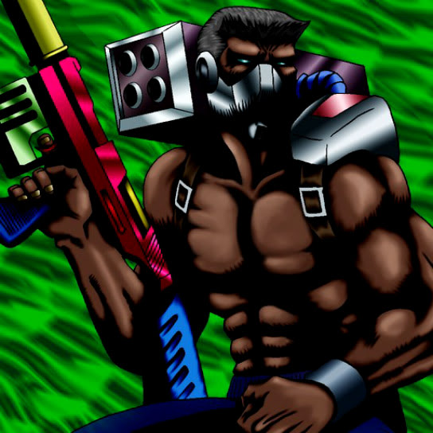

Cyber Commander

Description: "While this card is face-up in the defense position, the strength of all your MACHINE monsters are increased by 300 bonus points."
STATS
ATK: 750
DEF: 700DECK COST
Deck Cost per Card: 20EFFECT NOT IMPLEMENTED
Fusion List (20 Possible Fusions)
- Cyber Commander + Air Marmot of Nefariousness = Dice Armadillo
- Cyber Commander + Anthrosaurus = Cyber Saurus
- Cyber Commander + Armed Ninja = Cyber Soldier
- Cyber Commander + Doron = Cyber Soldier
- Cyber Commander + Dragon Zombie = Metal Dragon
- Cyber Commander + Hero of the East = Cyber Soldier
- Cyber Commander + Kageningen = Cyber Soldier
- Cyber Commander + Mammoth Graveyard = Cyber Saurus
- Cyber Commander + Masked Clown = Cyber Soldier
- Cyber Commander + Mystical Sheep #2 = Giga-tech Wolf
- Cyber Commander + Phantom Dewan = Disk Magician
- Cyber Commander + Queen's Double = Cyber Soldier
- Cyber Commander + Swordsman from a Foreign Land = Cyber Soldier
- Cyber Commander + Tomozaurus = Cyber Saurus
- Cyber Commander + Torike = Dice Armadillo
- Cyber Commander + Trap Master = Cyber Soldier
- Cyber Commander + Unknown Warrior of Fiend = Cyber Soldier
- Cyber Commander + Wow Warrior = Cyber Soldier
- Cyber Commander + White Dolphin = Misairuzame
- Cyber Commander + Wolf = Dice Armadillo